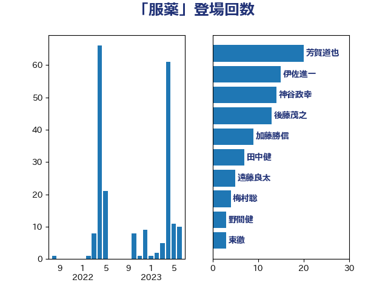

単語「服薬」

| 芳賀道也 | 国民民主党 | 20 回 |
| 伊佐進一 | 公明党 | 15 回 |
| 神谷政幸 | 自由民主党 | 14 回 |
| 後藤茂之 | 自由民主党 | 13 回 |
| 加藤勝信 | 自由民主党 | 9 回 |
| 田中健 | 国民民主党 | 7 回 |
| 遠藤良太 | 日本維新の会 | 5 回 |
| 梅村聡 | 日本維新の会 | 4 回 |
| 野間健 | 立憲民主党 | 3 回 |
| 東徹 | 日本維新の会 | 3 回 |
| 杉尾秀哉 | 立憲民主党 | 3 回 |
| 山崎正恭 | 公明党 | 3 回 |
| 長谷川英晴 | 自由民主党 | 2 回 |
| 川合孝典 | 国民民主党 | 2 回 |
| 岸田文雄 | 自由民主党 | 2 回 |
| 吉田とも代 | 日本維新の会 | 2 回 |
| 鶴保庸介 | 自由民主党 | 1 回 |
| 長谷川淳二 | 自由民主党 | 1 回 |
| 河野太郎 | 自由民主党 | 1 回 |
| 本田顕子 | 自由民主党 | 1 回 |
| 庄子賢一 | 公明党 | 1 回 |
| 川田龍平 | 立憲民主党 | 1 回 |
| 山下貴司 | 自由民主党 | 1 回 |
| 小野田紀美 | 自由民主党 | 1 回 |
| 小池晃 | 日本共産党 | 1 回 |
| 小寺裕雄 | 自由民主党 | 1 回 |
| 宮下一郎 | 自由民主党 | 1 回 |
| 大口善徳 | 公明党 | 1 回 |
| 佐藤英道 | 公明党 | 1 回 |
| 佐々木紀 | 自由民主党 | 1 回 |
| 仁木博文 | 無所属 | 1 回 |
| こやり隆史 | 自由民主党 | 1 回 |